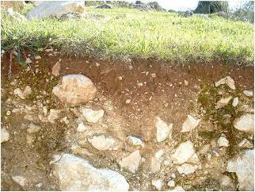

Suelo, del latín solum, es un término que se refiere a la parte inferior de ciertas construcciones o cosas. En castellano, tiene varias acepciones; así, puede decirse que el suelo es la superficie de la Tierra y donde se plantan las semillas para las actividades agrícolas. El suelo también puede ser el piso de una vivienda o la superficie artificial que se fabrica para contribuir con la solidez del piso. Para la ingeniería, el suelo es el sustrato físico sobre el que se desarrollan las obras. En el ámbito del urbanismo, por otra parte, el suelo es el espacio físico sobre el que se construye cualquier infraestructura. Todos estos conceptos son correctos, pero nosotros, como estudiosos de las ciencias naturales solo consideraremos el concepto relacionado con el desarrollo de las plantas.
¿Qué es el suelo?
Es un cuerpo natural o modificado por el hombre, constituido por materiales orgánicos e inorgánicos, además de fases líquidas y gaseosas. Este cuerpo se encuentra sobre la superficie de la tierra, contiene seres vivos y es capaz de mantener plantas (USDA 1994).

¿Cuáles son los límites del suelo?
- Arriba: La atmósfera o una lámina somera de agua.
- Abajo y a los lados: Roca, hielo, aire o agua, material meteorizado que no contiene organismos.
- anterior
- siguiente